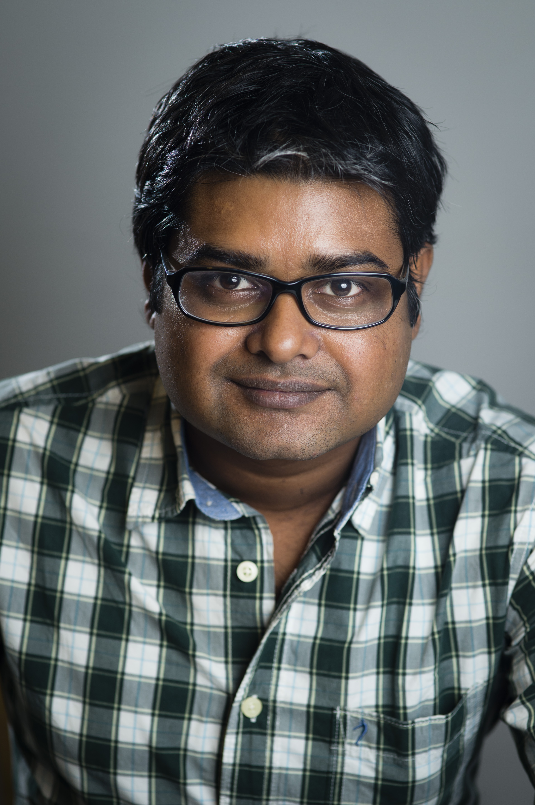

|
 |
Email: mrinal at iitpkd dot ac dot in
|
Open positions
Activities
Florence Nightingale Data Science Talk Series, an online freely open to all monthly event where eminent researchers across the country talk to students and researchers.
Active in spreading awareness among younger brains on data science. AI@School has been developed as one platform for this purpose.
A hands-on data science tutorial for beginners where unlike any other tutorial, learners can find useful codes, modify them and also execute to see the outcome. It is extremely easy to use and requires only a Google id and internet access to learn a wide range of data science tools and techniques.
Students
PhD. Yumna Fatma Farooqi
PhD. Eva Cherian
MTech. Muhammed Favas
Graduated
MS. Rimmon Bhosala (V-labs), 2022
MTech-2022. Vaishak Nair (Zoom), Narthu Chandrasekhar (Wabtec)
Notable Projects
Sakshi Rathore (BTech 2021) developed a web-app for privacy-aware learning that can demonstrate differential privacy and learning with privacy in an interactive manner
Subhajit and Parmanand (BTech 2022) developed a web-app Hands-on-Data which can teach data science in an interactive manner
Vaishak Nair (MTech 2022), Irene Casmir and Harikrishnan (BTech 2022) developed a tool to count crops automatically from images as well as videos
Rimmon (MS 2022) developed a technique to make CNN learn justifiable features from images without affecting accuracy.
Gaurav (MS 2022) developed a technique to automatically detect rare events in images without using labelled samples for training.
Research
My fascination is to develop simple and novel mathematical models to address interesting and challenging practical problems.
Current research interest is in Machine learning, Computer vision, Deep learning, Bayesian models, Learning to learn, Privacy-aware learning
Grants
Grant from Sansera Engineering Ltd for Crack Detection using Automated Magnetic Particle Inspection through Artificial Intelligence, 2022. Apply for JRF
SERB grant for Bayesian Deep Models for Efficient Privacy-Aware Learning in the Era of Big Data and Personalization, 2020
A grant from from IPTIF (IIT Palakkad Technology IHub Foundation) for Smart and Precise Agriculture along with Dr. Sahely Bhadra, Dr. Satyajit Das(PI), and Dr. Sreenath Vijayakumar, 2021.
Achievements
Organizing ScienceIE – SemEval 2017 task 10: “Extracting Keyphrases and Relations from Scientific Publications” with Isabelle Augenstein, Sebastian Riedel, and Andrew McCallum. See ScienceIE website for details.
A WIRED article on ScienceIE.
Topic models are popular mathematical tools for analysing text datasets, where a corpus is a collection of documents. The state of art notion in topic models was to use single topic vector per document.
I conceived the novel yet simple idea of using multiple topic vectors (MTV). We have observed phenomenal ability of MTV in (i) discovering subtle topics, (ii) modeling specific correspondence, (iii) modeling multi-glyphic topical correspondence, (iv) content driven user profiling for comment-worthy recommendations, (v) discovering taste of users in e-commerce portals. All of them helped in inventing novel models (i) subtle topic models (STM, in ICML, 2013), (ii) specific correspondence topic models (SCTM, in WSDM, 2014), (iii) multi-glyphic correspondence topic model (AAAI, 2015), (iv) collaborative correspondence topic models (CCTM in RecSys, 2015), (v) SOPER (CIKM, 2017).
I have also worked on Bayesian nonparametric models for learning very large scale (more than 8 million documents and 700 million tokens) datasets. There is NO method known using MCMC for such scale without using expensive parallel hardware. The technique is called SUMO and the work has been published at ICML, 2015.
Recently at Aalto university, we have been able to solve the problem of predicting drug sensitivity using gene expressions even after preserving privacy. I have conceived the novel concept of projecting outliers to tighter bounds without affecting non-outliers which has been the key in our method.
Past Positions
Postdoc. Department of Computer Science, UMass, Amherst, MA, USA.
Supervisor: Prof. Andrew McCallum
August, 2016 – June, 2017.
Project: Building next generation reviewing system.
Postdoc. Department of Computer Science, Aalto University in Helsinki, Finland.
Supervisor: Prof. Samuel Kaski.
October, 2014 – July 2016.
Project: Building differentially private Bayesian models for personalized medicine. Academy of Finland funded.
PhD. Department of Computer Science and Automation, Indian Institute of Science, India.
Supervisor: Prof. Chiranjib Bhattacharyya.
PhD Thesis: Extensions and Applications of Stick-Breaking Process on Topic Models.
|